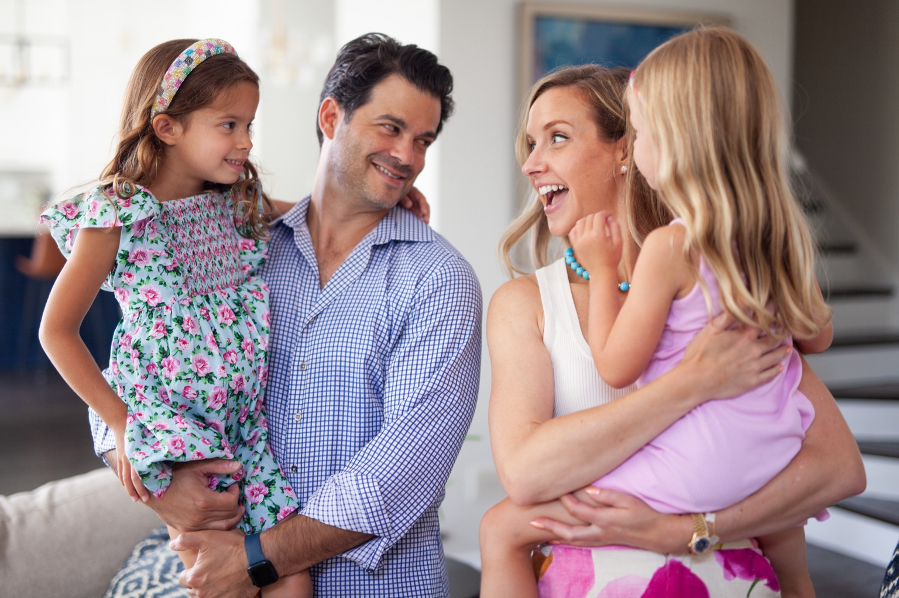
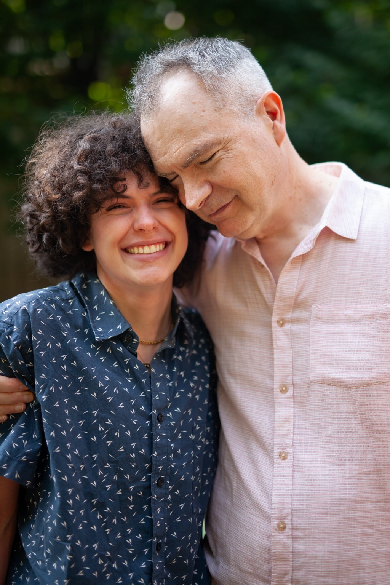
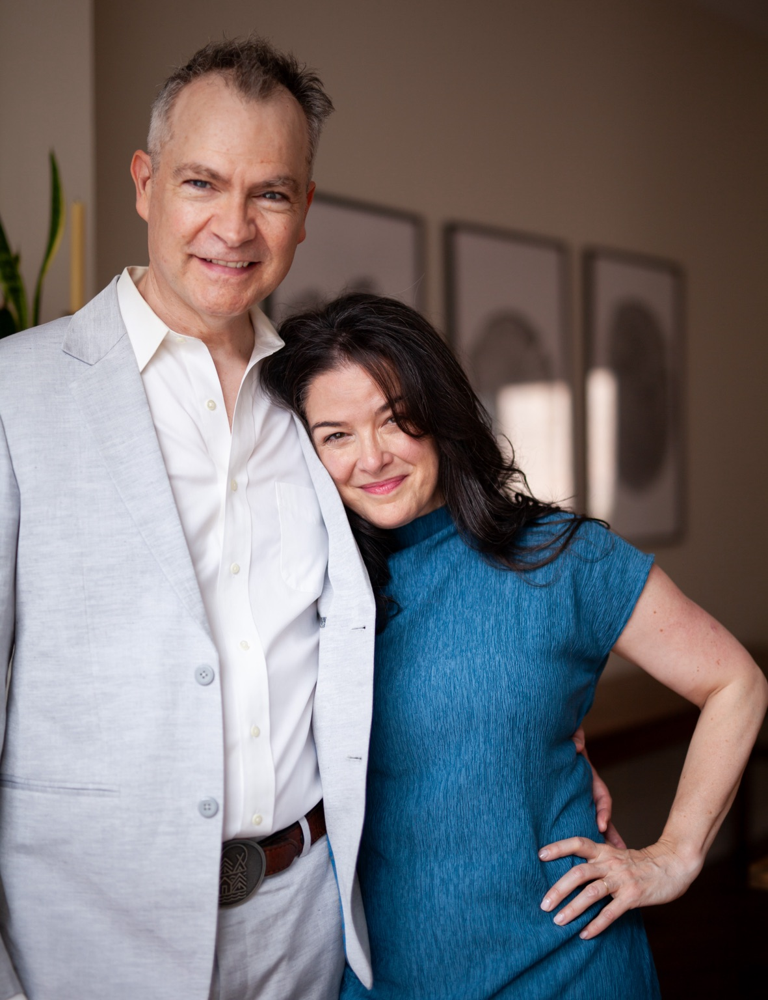
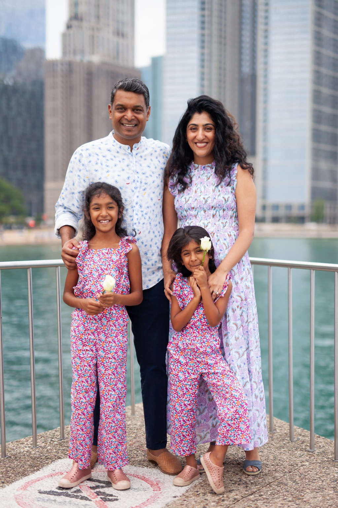
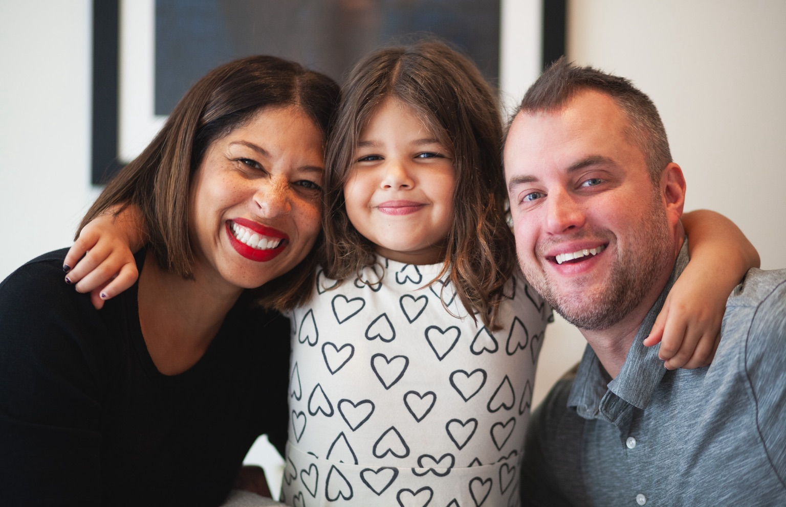

Hi! I’m Ben.
Back in high school, I picked up a camera, and I haven’t put it down since. For the past 30 years (yikes), I’ve been capturing authentic portraits of my friends and family. And now for the first time, I’m hanging a shingle and offering a small number of photography sessions to other families in the Chicago area.
As a parent, I know what it’s like to blink and realize your kid is somehow one full year older. *quietly sobs* Ahem. Sadly, while I don’t have a time machine, I do have a lot of great photos of my daughter growing up. And with every day that passes, those photos become more and more valuable to me. My goal is to give you a handful of those “hall of fame” photos that will only get sweeter with time.
Although photography is my passion, it’s not my full-time job, so my availability is quite limited. But if you’re interested in booking a session, follow me on Instagram (@syversonphoto) and send me a DM!
Ben
PS, About twice a year, I plan to offer some mini-sessions and other promotions such as gift cards. Sign up to my mailing list for early access!
Copyright 2024 Ben Syverson Photography



